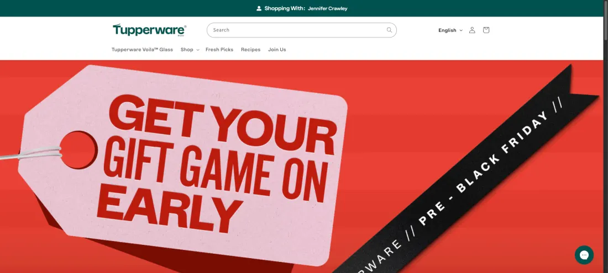
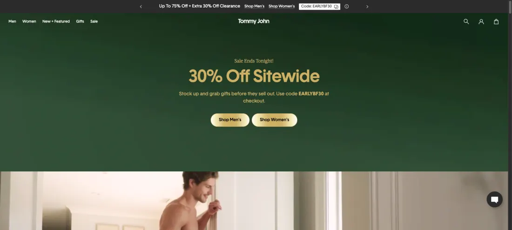
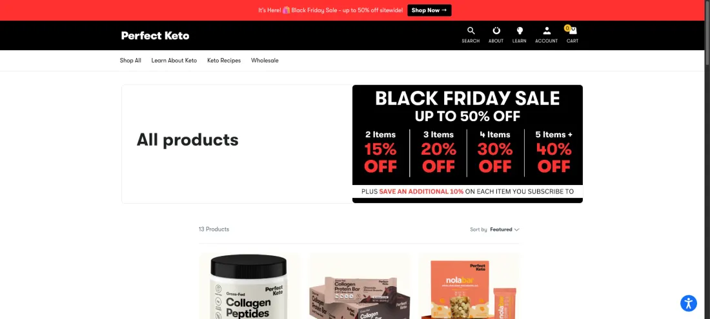
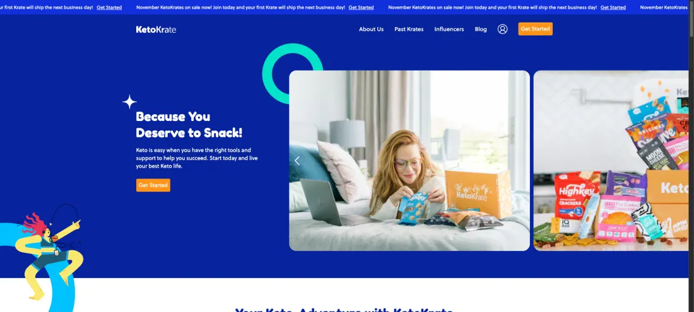
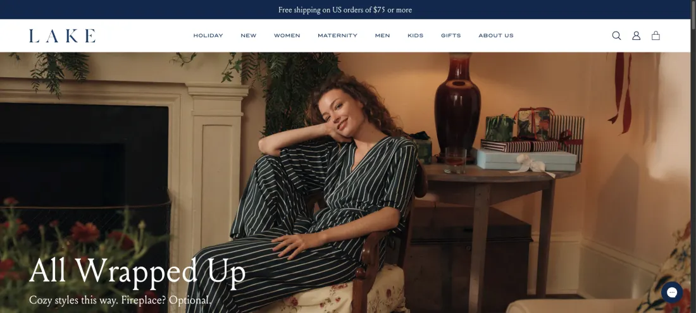
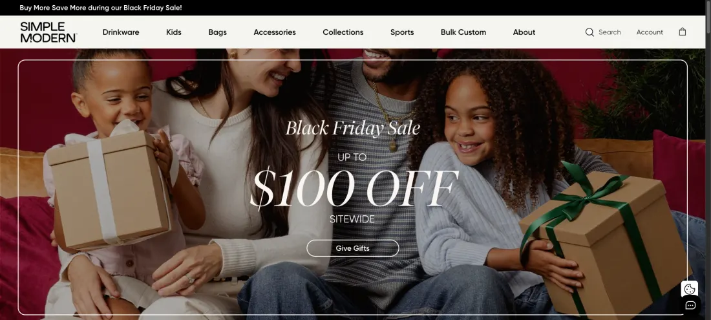
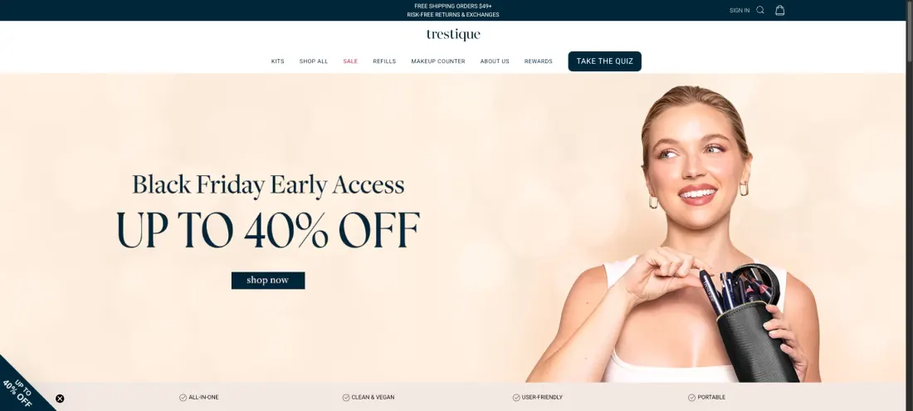
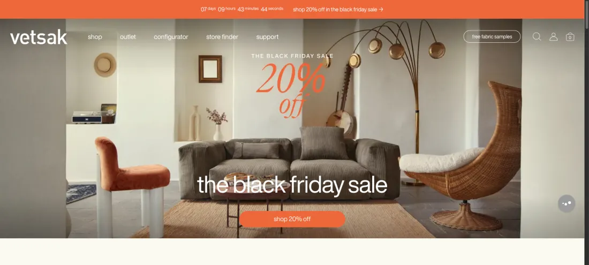
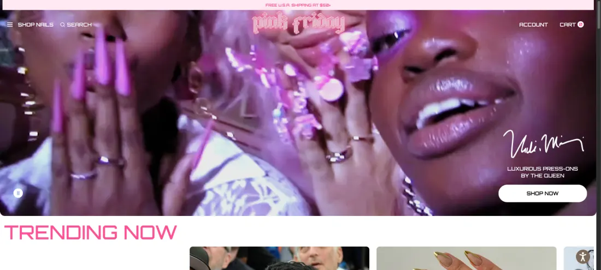

Senior Shopify full-stack developer
I build online stores that load fast and work for everyone.
10+ years building high-performance stores, Hydrogen storefronts, Checkout Extensibility, analytics and integrations for global brands.









- 10+years in e-commerce
- 12brands I worked with
- 5regions launched: US, CA, LATAM, EU, APAC
- 40+reusable components in one global theme
Selected work
Storefronts, apps and integrations I built for global brands.
-
Tupperware Brands
- Worked across all Tupperware international Shopify stores worldwide, supporting the brand’s global replatforming and redesign initiative.
- Rebuilt Tupperware’s entire Shopify theme architecture to support a single global design system rolled out to all regions (US, CA, LATAM, EU, APAC) without breaking local customizations.
- Re-engineered the core theme into a single international architecture with 40+ reusable components configured differently per market but maintained centrally.
6 more
- Migrated US/CA checkout to Checkout Extensibility, including custom validation, consultant-linked order logic, metafield-driven personalization, and analytics events.
- Integrated GA4, GTM, Klaviyo, and OneTrust at a global scale, resolving multi-domain inconsistencies, consent desync, duplicate firing, and cross-region attribution issues.
- Improved LCP and CLS across key landing pages by re-engineering media loading, removing blocking scripts, and restructuring Liquid loops to cut render cost.
- Mentored junior developers and wrote documentation used across global teams.
- Built multiple private Shopify apps for consultant workflows, storefront logic, and internal tooling.
- Developed internal utilities using Node.js + Shopify Admin API to automate repetitive operations, partner lookup logic, metafield management, and backlog reduction for regional teams.
- HTML
- SCSS
- Shopify 2.0
- Node.js
- React.js
- Javascript
- TypeScript
- Python
-
SPANX
- Built a fully custom Monogramming Personalization System using Vue.js, integrating real-time preview rendering, variant rules, and Shopify cart line item decoration.
- Developed Hydrogen and React components as part of the headless storefront migration, including rendering strategies, storefront API integrations, optimized hydration.
- Built multiple private Shopify apps using React.js, including: An internal Loyalty System Integration app syncing customer tier, rewards, and purchase history between Shopify and Azure.
6 more
- Developed Azure-connected middleware for reading/writing loyalty data, managing customer profiles, and supporting multi-system workflows.
- Eliminated double-firing analytics, improved consent state accuracy, and created a unified consent gate for all tracking, apps, and pixels.
- Architected a full OneTrust → Shopify Customer Privacy API synchronization system
- Implemented Checkout UI Extensions for customer data collection (birthday, forms, conditional fields) with metafield management and validation logic.
- Improved site accessibility through WCAG-aligned fixes: keyboard navigation, focus states, ARIA adjustments, and semantic markup improvements.
- Participated in migration from Liquid theme architecture to Hydrogen headless storefront, contributing to component architecture, caching rules, layout structure, and Storefront API wiring.
- HTML
- SCSS
- Shopify 2.0
- Javascript
- Python
- Polaris
- Rebuy
- Yotpo
-
Tommy John
- Built Vue.js UI components that powered interactive parts of the Tommy John storefront, including product modules, dynamic content slots, and personalized sections.
- Connected Vue components with Sanity CMS using GROQ queries and custom serializers, ensuring marketing could update content instantly without a developer.
- Maintained and extended Sanity schemas, document structures, and portable text blocks used across landing pages, PDP enhancements, and editorial modules.
7 more
- Implemented validation rules, custom fields, and content workflows that streamlined the marketing team’s publishing process.
- Debugged and fixed Sanity-related rendering issues in both Liquid and Vue layers during promotions and high-traffic campaigns.
- Integrated and maintained tracking events for GA4 + RudderStack, ensuring consistent data streams from Vue components and Liquid templates.
- Fixed broken, duplicated, or misfiring analytics events caused by legacy scripts, improving attribution reliability and reducing noisy data.
- Optimized rendering of Vue widgets to reduce blocking JS and improve mobile interaction speed.
- Resolved UI, accessibility, and layout bugs across PDP, PLP, search, navigation, and landing pages especially issues affecting Core Web Vitals.
- Served as on-call engineer during Black Friday/Cyber Week, handling urgent bug fixes, rollback decisions, analytics issues, and performance safeguards under heavy traffic.
- Vue.js
- Liquid
- JS
- Sass/SCSS
- accessibility
- Sanity CMS (schemas
- GROQ queries
- serializers
More projects
-
- Contributed to the initial launch of the Rhode Skin Shopify store, ensuring stable theme architecture, clean Liquid structure, and a smooth go-live across all key templates
- Implemented a complete GTM + GA4 tracking setup, wiring dataLayer pushes for PDP views, variant selections, add-to-cart events, and checkout steps.
- Resolved attribution issues by structuring events consistently and ensuring compatibility with consent and performance constraints.
- Built several brand-specific UI components in Sass, including modular layout blocks, responsive promotional sections, and animated details that matched the Rhode design direction.
- Optimized interactive elements, image rendering, and breakpoints to reduce layout shift and improve mobile speed.
- Ensured accessibility and semantic markup across newly created components.
- Liquid
- Sass/SCSS
- JavaScript (vanilla + modular)
- responsive components
- BEM/CSS architecture
- GA4
- GTM
- structured dataLayer events
-
- Built Recharge-powered PDP logic for subscription frequency, dynamic discounts, and variant-specific subscription rules.
- Developed custom scripts and components that synchronized Shopify product/variant data with Recharge subscription settings, reducing inconsistencies and customer support issues.
- Integrated Recharge events with GA4/GTM, Tealium, and Zapier, ensuring accurate tracking for subscription starts, skips, swaps, and cancellations.
- Fixed attribution and event duplication problems caused by the Shopify + Recharge dual system, improving marketing data accuracy.
- Implemented backend logic using Shopify Admin API and Recharge API to automate subscription updates and customer-specific workflows.
- Improved variant UX, micro-interactions, and layout behavior to boost subscription conversion.
- Refactored existing UI to improve maintainability and reduce rendering overhead on high-traffic pages.
- Worked collaboratively with design, QA, and marketing to patch critical issues during product launches and promotions.
- Liquid
- JS/TS
- HTML/CSS
- Recharge App (Subscription API
- customer portal customizations
- subscription rules
- discount logic)
- Shopify Admin API
-
- Participated in the full redesign of the Keto Krate storefront, building new theme components that reflected the updated brand guidelines.
- Rebuilt sections and blocks using modern CSS architecture (Sass/BEM/utility patterns), ensuring consistent spacing, typography, breakpoints, and reusable patterns across the entire store.
- Refactored outdated Liquid templates into modular, maintainable components to support rapid iteration and future expansions.
- Built the complete Recharge customer portal theme, implementing all styling, layout, and interaction patterns using custom CSS and JS.
- Adapted the Recharge UI to match Keto Krate’s brand identity, ensuring a cohesive experience between the Shopify storefront and subscription management.
- Debugged Recharge styling and state issues, improving usability on mobile and fixing layout inconsistencies across subscription steps.
- Improved subscription flow UX (e.g., box selection, add-ons, skip/pause actions) by refining layout logic, button hierarchy, and interaction states.
- Ensured cross-browser and mobile-responsive behavior across the redesign.
- Liquid
- CSS/SASS
- responsive design
- JavaScript
- Recharge Portal Theme (CSS/JS customization)
- Recharge subscription logic
-
- Built a site-wide persistent size selection system that stores the customer’s chosen size and automatically pre-selects it on every PDP they visit.
- Implemented logic using localStorage + product variant mapping, ensuring correct variant auto-selection (even for products with different size structures).
- Improved conversion by reducing friction for frequent shoppers and simplifying mobile size selection.
- Integrated GA4 events tied to size persistence, variant changes, add-to-cart, and PDP interactions.
- Fixed inconsistencies in product/variant identifiers sent to analytics platforms, improving data accuracy for marketing teams.
- Resolved edge cases around variant availability, error handling, and fallback patterns.
- Improved performance by reducing unnecessary render logic and optimizing DOM manipulation inside PDP scripts.
- Liquid
- CSS/SASS
- React.js
- JavaScript
- GA4
-
- Migrated the entire storefront to Shopify Online Store 2.0, refactoring templates into modular, JSON-based sections and ensuring compatibility with new Shopify architecture.
- Reworked CSS, asset loading, and structural layout to achieve cleaner, more maintainable theme code.
- Designed and developed fully custom landing pages tailored for product launches, campaigns, and influencer partnerships.
- Built flexible content blocks (video, testimonials, ingredient features, comparison tables) that marketing teams could assemble without developer intervention.
- Created a fully custom hair quiz experience from scratch, including UI/UX, logic flow, scoring, result mapping, and product recommendations.
- Integrated quiz output with Shopify product recommendations and tracking (GA4/marketing platforms).
- Engineered a custom bundle builder that allowed users to mix-and-match products, dynamically update pricing, and send the combined bundle to the cart.
- Liquid
- CSS/SASS
- React.js
- Node.js
- Shopify APIs
- JavaScript
- GA4
-
- Built new Shopify OS 2.0 sections specifically designed for upcoming Simple Modern product collections, enabling marketing to launch campaigns without custom coding.
- Developed modular, reusable components (gallery blocks, feature highlights, product story modules, influencer sections) that aligned with brand identity and supported rapid iteration.
- Created fully custom landing pages for new collection drops, with tailored layouts, animations, and visual storytelling components.
- Liquid
- CSS/SASS
- JavaScript
-
- Developed a fully custom bundle builder that allowed customers to mix-and-match products, dynamically update pricing, and add bundled items to the cart with correct variant handling.
- Implemented selection logic, validation, cart payload creation, and UI interactions without relying on third-party bundle apps.
- Refactored legacy CSS into a more organized, maintainable structure — reducing repetition and preventing style collisions.
- Designed and implemented custom landing pages for product launches and marketing campaigns
- Liquid
- CSS/SASS
- React.js
- JavaScript
-
- Implemented Vetsak storefront redesign, translating the new brand identity into a clean, modern Shopify theme.
- Rebuilt structural templates (homepage, PDP, PLP, landing pages) to match updated layouts, grids, spacing systems, and motion guidelines.
- Ensured each section was highly configurable so the marketing team could build new pages without engineering support.
- Ensured all components worked seamlessly across desktop, tablet, and mobile with consistent performance.
- Liquid
- CSS/SASS
- React.js
- JavaScript
-
About
I'm a Brazilian developer who started working with technology as a teenager.
Today I'm a Senior Shopify Full-Stack Developer with 10+ years of experience building high-performance stores, headless architectures and custom integrations. In the last years I've been turning challenging e-commerce projects into fast, accessible and scalable solutions.
My work revolves around Hydrogen/Next.js builds, Azure structures, Checkout Extensibility, advanced analytics pipelines, GA4/GTM/Klaviyo and OneTrust compliance. Across global brands, I've led multi-region launches with a main focus on performance, UX, accessibility and clean engineering practices.
Outside of work, I love reading books and watching science fiction shows and movies. I have 9 dogs (yes, that's a lot) and I really love animals.
What I can do for your project
Storefront and performance
- High-Performance Shopify Store DevelopmentI’ll build fast, stable, highly optimized Shopify storefronts.Liquid, TypeScript, Vanilla JS, Dawn architecture, lazy loading, Lighthouse/WebVitals optimization, accessibility (a11y), SEO fundamentals.
- Theme Extensions & Liquid CustomizationsI’ll create fully customizable, reusable sections and blocks for your store.Theme Extensions, Liquid, metafields, dynamic media, animations, 3D ( model-viewer ), CSS/JS components.
- Performance Optimization & Code AuditsI’ll diagnose and fix performance issues, theme debt, script conflicts, and tracking failures.Lighthouse, DevTools profiling, OneTrust + GTM script audits, accessibility checks, css size reduction, Liquid/JS refactors.
Headless and custom apps
- Headless & Hydrogen / Next.js ArchitecturesI’ll develop headless Shopify builds with high performance and strong SEO.Hydrogen, Remix, Next.js, React, Storefront API (GraphQL), Oxygen/Vercel, caching, route optimization.
- Custom Shopify Apps (Remix, Node.js, TypeScript)I’ll build private or public apps for automation, integrations, or custom merchant tools.Remix, Node.js, Express, TypeScript, Admin API (GraphQL/REST), Webhooks, Polaris, OAuth, PostgreSQL, Redis.
- Full End-to-End E-Commerce EngineeringI’ll lead and deliver complex Shopify features from architecture to deployment.Tech: GitHub, CI/CD, JIRA, Confluence, logging, code reviews, documentation, scalable engineering patterns.
Checkout and commerce logic
- Checkout Extensibility & Conversion OptimizationI’ll create custom checkout UI extensions and event tracking that improve UX and help with your store conversions.Checkout UI Extensions, Pixels, Functions, TypeScript, analytics.subscribe , custom fields, validation, dynamic logic.
- Support for B2B & Wholesale ImplementationsI’ll implement complete B2B experiences with custom logic for pricing, accounts, and catalogs.Shopify B2B (Companies, Roles, Price Lists), metafields, discount rules, app logic, Flow automations, Admin API.
- Integrations With Third-Party ServicesI’ll integrate Shopify with loyalty, CRM, analytics, marketing and operational systems.Klaviyo, Blotout, Recharge, Rebuy, Gorgias, Attentive, VWO, Recharge, Wonderment, Azure Functions, custom REST/GraphQL APIs, Webhooks.
Data and compliance
- Advanced Analytics, GA4, GTM & Event TrackingI’ll implement robust, privacy-safe tracking setups with clean event structures.GA4, GTM (client + server), Shopify Pixels, analytics.subscribe , dataLayer engineering, Klaviyo, Blotout.
- OneTrust, Privacy & Consent ComplianceI’ll build complete consent systems integrated with Shopify’s Customer Privacy API.OneTrust (OtSDKStub, Optanon API, DomainData Groups), cookie deletion automation, local/sessionStorage cleanup, GPC support, multi-domain consent syncing.
Stacks I work with
- Google Tag Manager
- Yotpo
- Shopify Custom Apps
- Sanity
- Rebuy
- Recharge
- Shopify Plus
- Klaviyo
- Shopify Checkout Extensibility
- Microsoft Azure
- OneTrust
- Shopify Hydrogen
- Gorgias
- Loop Returns
- WCAG
- Git
- React
- Node.js
- JavaScript
- Shopify
- Storefront API
- TypeScript
- Shopify Functions
- Shopify Admin API
- Webhooks